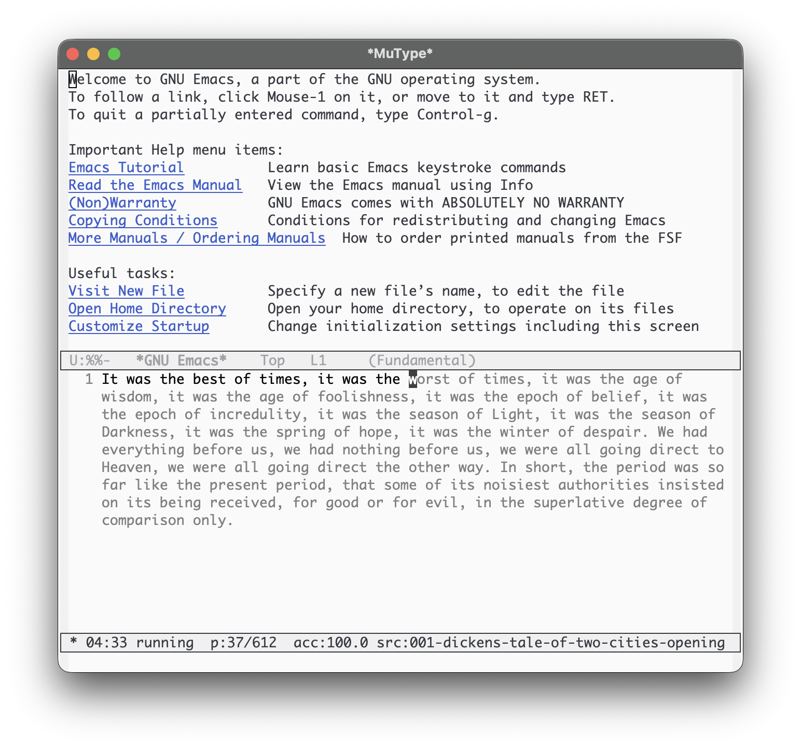

MuType
菩提本无树，
明镜亦非台；
本来无一物，
何处惹尘埃？
What is MuType?
Type into stillness. Calm rhythm. Low distraction. Steady flow.
Name: Mu (無)
MuType can be read as “type into stillness”. The “Mu” comes from the Chinese character “無” (simplified: “无”).
In Chan/Zen, “mu” points to letting go of rigid judgments and returning to a clear, unforced mind.
MuType uses this as a reminder: focus on the current character, keep a calm rhythm, and let mistakes pass.
Demo

*MuType*.
Features
- Two modes: flow and precision.
- HUD in the mode line: timer, progress, accuracy, zone.
- Diverse sources: classic literature, Chinese treasures, and code snippets.
- Report buffer at session end.
- Zero external dependencies.
Install
MELPA (recommended)
Once MuType is available on MELPA, install with:
M-x package-install RET mutype RETIf you don't have MELPA enabled:
(require 'package)
(add-to-list 'package-archives '("melpa" . "https://melpa.org/packages/") t)
(package-initialize)Manual (load-path)
(add-to-list 'load-path "/path/to/mutype")
(require 'mutype)straight.el (optional)
(use-package mutype
:straight (mutype :type git :host github :repo "suxiaogang223/mutype")
:commands (mutype-mode mutype-mode-custom))Start
Run
M-x mutype-mode
to jump into *MuType* and start typing.
To choose mode/duration/source, use
C-u M-x mutype-mode
or
M-x mutype-mode-custom.
-
flow— mistakes do not block progress. -
precision— you must type the correct character to advance.
During a session
The MuType HUD lives in the mode line and shows:
-
zone symbol (
·,:,*,●) -
timer and state (
running/paused) - progress, accuracy, and current source label (clickable)
Common keys and commands
| Key / Command | Action |
|---|---|
| C-c C-p | Pause/resume |
| C-c C-q | Stop session |
| C-c C-n | Next source (restart) |
| C-c C-b | Previous source (restart) |
M-x mutype-select-source |
Pick a source (restart) |
M-x mutype-report-last-session |
Open the last report |
Typing follows MuType's sequential index. If point is moved, input snaps back to the current training position.
Text sources
MuType intentionally reads plain text from the bundled
sources/*.txt directory.
To add or tweak training text, edit or add .txt files
under sources/. Since this directory is part of the
installed package, upgrades may overwrite local changes—keep a copy of
your custom texts.
Customization
Put something like this in your init file:
(setq mutype-default-mode 'flow
mutype-default-duration-minutes 15
mutype-enable-guidance-text t
mutype-prompt-on-start nil)Report
MuType shows a report buffer when you stop a session or when the
time limit is reached.
Reopen the last report with
M-x mutype-report-last-session.